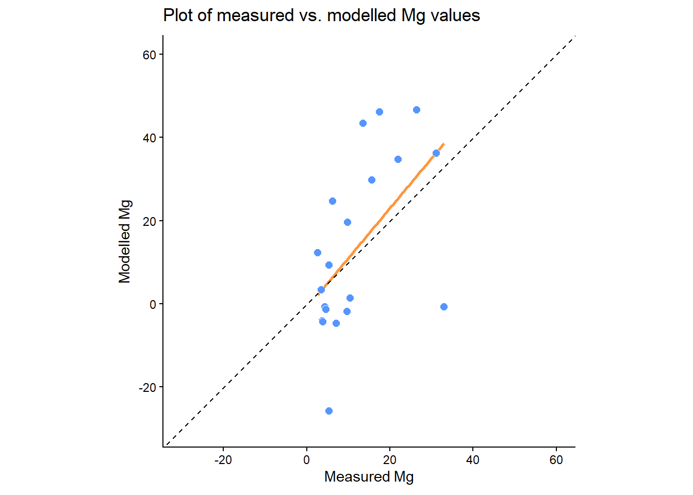
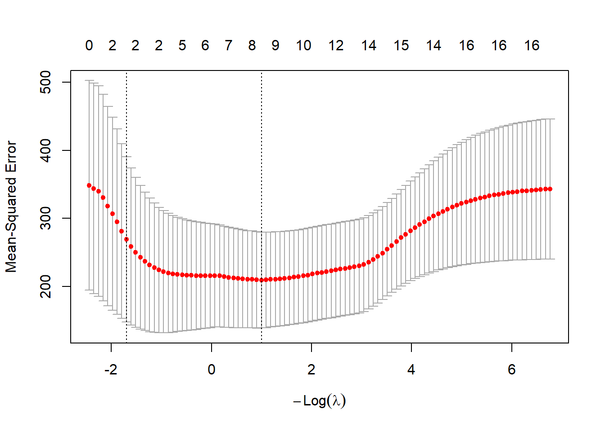

Chapter 11 Mersey IV - Statistical analysis
11.1 Task 5: Model building
In this next task, we will compare the information about catchment characteristics with the water quality data collected at each of the 70 monitoring stations. To begin:
Load the csv file created at the end of Task 4 (
mersey_watersheds_ea.csv), saving to a new variable calledwatersheds_df:
# Reads completed file from csv
watersheds_df <- read.csv(here("output", "practical_2", "mersey_watersheds_ea.csv"))If you have any other variables in your R environment, these can be removed using rm().
This data frame should contain the following 10 water quality indicators for each watershed:
- pH: acidity/alkalinity;
- SSC: suspended solids concentration (mg l−1);
- Ca: calcium (mg l−1);
- Mg: magnesium (mg l−1);
- NH4: ammonium (mg-N l−1);
- NO3: nitrate (mg-N l−1);
- NO2: nitrite (mg-N l−1);
- TON: total oxidised nitrogen (mg-N l−1);
- PO4: phosphate (mg-P l−1);
- Zn: zinc (μg l−1).
It should also contain the continuous derivatives (e.g. average elevation) and categorical derivatives (e.g. land cover percentage) for each watershed.
Note: some of the calculated percentages may not add up to 100%. During the reclassification of the categorical datasets (land_cover, soils, bedrock), we focused on the macro-classes which make up the majority of the catchment and are known to have the greatest impact of river hydrochemistry (e.g. urban areas, farmland). While other land cover categories are found within each watershed (hence \(total\) \(percent < 100\)), these typically account for only a small percentage of the total area and have a limited effect on the river environment. These categories have been excluded to simplify the analysis.
11.1.1 An introduction to linear models in R
It is now time to examine the relationships between river water quality and catchment metrics. The key model outputs that are ultimately required for the assessment are:
Regression equations relating each water quality variable (dependent variable; n = 10) to the important catchment characteristics (independent variables; n = 16).
An assessment of model quality. The exact metrics / plots / tests are up to you!
Remember, you don’t have to run every code block shown below, but you can do so if it would help your understanding.
In the following instructions, I will guide you through some of the keys steps for one water quality indicator (
Mg). You can replicate this approach and add further analysis (e.g., model evaluation) for the other nine indicators.
The simplest way to run a linear regression in R is to use the lm() function (i.e., a linear model), an example of which is shown below, storing in an output called model:
# Fit a linear model (ordinary least squares regression)
model <- lm(formula = Mg ~ average_elevation, data = watersheds_df)We have defined the data frame being used (data = watersheds_df) and the input variables from that data frame. This is achieved by including their column names, shown here:
## [1] "Seed_Point_ID" "FID" "EA_ID" "Group"
## [5] "Ph" "SSC" "Ca" "Mg"
## [9] "NH4" "NO3" "NO2" "TON"
## [13] "PO4" "Zn" "average_elevation" "average_rainfall"
## [17] "average_slope" "average_aspect" "Arable_percent" "Heath_percent"
## [21] "Grassland_percent" "Urban_percent" "Wetland_percent" "Permeable_percent"
## [25] "Impermeable_percent" "Gleyed_percent" "Peats_percent" "Sands_and_Muds_percent"
## [29] "Limestone_percent" "Coal_percent"Input variables in the formula are separated by ~, where the variable to the left is the dependent variable (Mg) and the variable to the right is an independent variable (average_elevation). We can, however, include multiple independent variables to perform multiple linear regression. This is achieved as follows, where additional independent variables are separated by +:
# Fits a linear model
model <- lm(formula = Mg ~ average_elevation + Grassland_percent, data = watersheds_df)We can then assess the model output using the summary function:
##
## Call:
## lm(formula = Mg ~ average_elevation + Grassland_percent, data = watersheds_df)
##
## Residuals:
## Min 1Q Median 3Q Max
## -16.055 -5.932 -2.206 1.366 59.981
##
## Coefficients:
## Estimate Std. Error t value Pr(>|t|)
## (Intercept) 30.69098 4.02921 7.617 1.18e-10 ***
## average_elevation -0.05654 0.01389 -4.070 0.000126 ***
## Grassland_percent -0.12687 0.08066 -1.573 0.120473
## ---
## Signif. codes: 0 '***' 0.001 '**' 0.01 '*' 0.05 '.' 0.1 ' ' 1
##
## Residual standard error: 13.97 on 67 degrees of freedom
## Multiple R-squared: 0.2964, Adjusted R-squared: 0.2754
## F-statistic: 14.11 on 2 and 67 DF, p-value: 7.672e-06For this set of independent variables, we have an R2 of 0.30 (Multiple R-squared: 0.2964) and a model p value of < 0.01 (p-value: 7.672e-06).
What is your opinion of the model performance?
The model coefficients for the independent variables are described above, where * denotes p values < 0.05 (95% probability) and ** denotes p values < 0.01 (99% probability). As the coefficients are very small, they are presented in scientific notation. These can be converted to numeric (non-scientific) format using the following code:
## [1] "-0.0002096"We can supply multiple values to the format function by creating a vector:
When you’re happy you understanding the formatting of the
lmfunction, move on to the next section.
11.1.2 Training vs. Testing
One limitation of the above approach is that our dataframe (watersheds_df) contains observations from all 70 EA monitoring stations.
When performing statistical analysis, it is common practice to split any dataset into:
- a training subset, which is used to create the model(s).
- a testing subset, which is used to evaluate the model(s).
Subsetting our data in this way allows models to be evaluated more rigorously. Many models perform well “in-sample” but poorly “out-of-sample” when evaluated against independent data (i.e. the testing subset). This is commonly referred to as over-fitting.
Training and testing subsets are usually defined randomly, with an approximate ratio of 70:30 (although this varies). However, and to ensure reproducibility, this step has been completed for you: the watersheds_df dataframe contains a group variable denoting which monitoring sites belong to the training and testing subsets.
Run the code above to create
trainingandtestingdataframes:
# Extracts training dataset, comprising 50 observations (~70%)
training <- subset(watersheds_df, Group == "Training")
# Extracts training dataset, comprising 20 observations (~30%)
testing <- subset(watersheds_df, Group == "Testing") Before you move on to the next section, can you think of any limitations of this approach?
Hints: How important is the training-testing ratio? How are training-testing subsets created?
11.1.3 The full model
An additional limitation of the above approach is that we have manually defined the independent variables of interest (average_elevation + Grassland_percent). For exploratory analysis, however, we may not know which are the most important variables. Perhaps there is a combination of independent variables which produces a better model fit (e.g. R2 > 0.30)?
As a first step, we could create a full model including all the relevant independent variables. This would include the normalised variables (e.g. Arable_percent, Heath_percent, …), but we’d want to exclude the categorical counts (e.g. Arable, Heath, … influenced by catchment size), as well as any IDs or geometry variables. In general, we are only interested in testing the continuous derivatives (column names starting with average_) and the normalised categorical derivatives (column names ending in _percent).
Rather than typing out the columns of interest manually, we are going to use the select function from the dplyr package to achieve this:
# Creates a vector of column names, including only those which contain "average" or "percent"
factors <- colnames(watersheds_df %>% dplyr::select(contains(c("average", "percent"))))
# Prints to console
factors## [1] "average_elevation" "average_rainfall" "average_slope" "average_aspect"
## [5] "Arable_percent" "Heath_percent" "Grassland_percent" "Urban_percent"
## [9] "Wetland_percent" "Permeable_percent" "Impermeable_percent" "Gleyed_percent"
## [13] "Peats_percent" "Sands_and_Muds_percent" "Limestone_percent" "Coal_percent"Run the above code. Note, the formatting of
dplyr::selectmay be slightly confusing but it is necessary because there is also aselectfunction in theMASSpackage. Here, we are telling R to useselectfromdplyr.
Using this vector of column names, we are going to create new data frames (called training_df and testing_df) containing only the independent variables of interest for the training dataset:
Run the above code and use
head()to inspect the results.
To run a linear regression using these data, we need to ensure our dependent variable of interest is also present in the dataframe, which can be achieved using cbind. Note that we have specified variable as the name of the column containing the Mg values, but this can be changed if you desire:
# Column bind (cbind) the dependent (n=1) and independent variables (n=16)
model_df <- cbind(variable = training$Mg, training_df)Run the above code which creates a new dataframe (
model_df) containing the dependent variable we want to model (Mg) and the full set of independent variables for our training set.
Next, run a new
lm()model using all the independent variables, which can be acheived using the equationvariable ~ ., and inspect the output.
##
## Call:
## lm(formula = variable ~ ., data = model_df)
##
## Residuals:
## Min 1Q Median 3Q Max
## -23.906 -4.577 -0.762 2.907 45.248
##
## Coefficients:
## Estimate Std. Error t value Pr(>|t|)
## (Intercept) 85.884874 612.423593 0.140 0.8893
## average_elevation 0.073763 0.082405 0.895 0.3772
## average_rainfall -0.032572 0.032796 -0.993 0.3278
## average_slope 0.959319 2.989139 0.321 0.7503
## average_aspect -0.056961 0.071344 -0.798 0.4303
## Arable_percent 0.745315 0.345833 2.155 0.0385 *
## Heath_percent -0.008754 0.459029 -0.019 0.9849
## Grassland_percent -0.111924 0.347421 -0.322 0.7494
## Urban_percent 0.060574 0.366645 0.165 0.8698
## Wetland_percent -0.093537 0.405536 -0.231 0.8190
## Permeable_percent -2.510005 5.944348 -0.422 0.6756
## Impermeable_percent -2.682134 5.919185 -0.453 0.6534
## Gleyed_percent -2.306212 5.941057 -0.388 0.7004
## Peats_percent -2.609482 5.974192 -0.437 0.6651
## Sands_and_Muds_percent 1.896667 1.506477 1.259 0.2169
## Limestone_percent 1.849674 1.584516 1.167 0.2514
## Coal_percent 1.958293 1.508695 1.298 0.2033
## ---
## Signif. codes: 0 '***' 0.001 '**' 0.01 '*' 0.05 '.' 0.1 ' ' 1
##
## Residual standard error: 13.95 on 33 degrees of freedom
## Multiple R-squared: 0.6147, Adjusted R-squared: 0.4279
## F-statistic: 3.291 on 16 and 33 DF, p-value: 0.001857Question: How has model performance changed?
Do you think adding all our independent variables to the model is a good approach?
11.1.3.1 Problems with the full model
Including all the independent variables has improved our model performance on the training set. However, there are some important issues we need to consider:
While adding all the independent variables has increased the overall model fit (R2), we don’t know which variables are actually important. Perhaps only one or two of these have a demonstrable and/or high magnitude effect on the dependent variable? In the example above, only one coefficient is marked as significant at \(p < 0.05\) (
Arable_percent).In general, we prefer models with the minimum number of parameters (independent variables). These models require fewer assumptions, less intensive data collection, can be applied more confidently to new data sets/locations, and are often easier to interpret. This principle of model parsimony is based upon Occam’s Razor: “other things being equal, simpler explanations are generally better than more complex ones”.
Another, and perhaps more important issue, is that we not yet assessed the performance of the model on the
testingdata set. Good performance on the training set is a promising sign, but we also need to evaluate how the model performs on unseen and independent data.
To achieve this, we can use the predict() function which predicts new values for Mg based on our model and using catchment characteristics from the testing set (newdata = testing):
# Predict Mg values based upon linear model, saving to testing dataframe
testing$predicted_Mg <- predict(linear_model, newdata = testing)Run the above code, which will create a new column in the
testingdataframe calledpredicted_Mg, using our model as input (linear_model).
To evaluate the model performance, create a scatter plot of measured
Mgvs. predictedMgvalues, using the skills developed in the Introduction to R. I would recommend adding a 1:1 line to the plot, as follows:geom_abline(intercept = 0, slope = 1, lty = "dashed"). You could also add a linear regression using the measured and modelled values, although see below for important disucssion. This can be acheived using the following:geom_smooth(method = "lm", se = FALSE, colour="#FF953C").

Use this plot to assess the model performance on the
testingset. Can you see evidence of systematic and/or random error?
While this plot allows for visual evaluation of the model, it is also useful to produce metrics for a quantitative evaluation, such as root-mean-square error (RMSE), normalised root-mean-square-error (nRMSE), or R2, which you’ve covered earlier in the unit.
It is also tempting at this stage to produce a regression between the measured and modelled values, such as the following:
# Regression (measured vs. modelled)
prediction_model <- lm(formula = Mg ~ predicted_Mg, data = testing)
summary(prediction_model)##
## Call:
## lm(formula = Mg ~ predicted_Mg, data = testing)
##
## Residuals:
## Min 1Q Median 3Q Max
## -8.965 -4.264 -3.068 2.177 24.748
##
## Coefficients:
## Estimate Std. Error t value Pr(>|t|)
## (Intercept) 8.4309 2.1783 3.870 0.00112 **
## predicted_Mg 0.2560 0.0906 2.826 0.01119 *
## ---
## Signif. codes: 0 '***' 0.001 '**' 0.01 '*' 0.05 '.' 0.1 ' ' 1
##
## Residual standard error: 8.145 on 18 degrees of freedom
## Multiple R-squared: 0.3073, Adjusted R-squared: 0.2688
## F-statistic: 7.986 on 1 and 18 DF, p-value: 0.01119While this looks like a sensible approach, this is actually incorrect because this is evaluating the deviations from the modelled line-of-best-fit (shown in \({\color{#FF953C}{orange}}\) above), and not the 1:1 line. An easy mistake!
To illustrate, below is a plot of some data from Alexander et al. (2015), a highly recommended paper on \(R^2\). As you can see from the plot, there is a clear correspondence between the observed and predicted values. If we run a linear regression on these data (lm(formula = observed ~ predicted...), then \(R^2=1\) i.e., a straight line can be drawn through the data points.
This is misleading, however, because the data are far from the 1:1 line. The correct \(R^2\) is actually \(-1.26\), which is very different!
##
## Call:
## lm(formula = observed ~ predicted, data = df)
##
## Residuals:
## 1 2 3 4 5 6 7
## 0.001274 -0.002371 0.001560 -0.002084 0.006710 -0.009373 0.004283
##
## Coefficients:
## Estimate Std. Error t value Pr(>|t|)
## (Intercept) -0.022030 0.018586 -1.185 0.289
## predicted 0.852532 0.002171 392.738 2.03e-12 ***
## ---
## Signif. codes: 0 '***' 0.001 '**' 0.01 '*' 0.05 '.' 0.1 ' ' 1
##
## Residual standard error: 0.005749 on 5 degrees of freedom
## Multiple R-squared: 1, Adjusted R-squared: 1
## F-statistic: 1.542e+05 on 1 and 5 DF, p-value: 2.031e-12
To produce the correct \(R^2\), we need to do so manually using the following equation:
\[R^2=1-\frac{RSS}{TSS}\]
Here \(RSS\) is the residual sum of squares i.e., deviations of predicted values (e.g., predicted_Mg) from actual empirical values (e.g., Mg), and can be calculated in R as follows:
# Residual sum of squares i.e., the size of the residuals from the model
rss <- sum((testing$Mg - testing$predicted_Mg)^2)\(TSS\) refers to the total sum of squares i.e., the dispersion of the data points from the average value, or as Alexander et al. (2015) summarise: “the size of the residuals for a null model where all predictions are the same, i.e. the mean value.”
\(TSS\) involves:
- calculating the difference between each measured value and the mean of the measured values, for example using the
mean()function, - squaring the differences,
- calculating the total sum of the squared values.
For example, if these were the measured values and the mean:
\[[5.3, 4.6,6.5,8.5,10.1]\] \[mean=7.0\] the differences would be as follows: \[[-1.7,-2.4,-0.5,1.5,3.1]\] the squared differences would be:
\[[2.89, 5.76, 0.25, 2.25, 9.61]\] resulting in:
\[TSS = 20.76\]
Write code to calculate \(TSS\) using the guidance above, and use the \(RSS\) example for assistance. If you get stuck, ask for help!
The ratio of \(RSS\) to \(TSS\) accounts for the unexplained variation in the dependent variable that is not accounted for by the model. In turn, using \(1-\frac{RSS}{TSS}\) returns our explained variation (\(R^2\)), which for the measured-modelled Mg data, produces:
## [1] -2.309345This has produced an unexpected negative value, similar to the example data from Alexander et al. (2015) above. How can we explain this?
Numerically, this has occurred because \(RSS > TSS\) i.e., the error (residuals) in the model (\(RSS\)) are greater than the variation of the observations around their mean (\(TSS\)). But what does that actually mean?
When \(R^2<0\), this means that the model predictions are worse than simply using the mean of the dependent variable (Mg) as a predictor i.e., a horizontal line at the Mg mean would have lower residuals than our predictions. Not good!
If testing R2 is lower than training R2, we would describe our models as overfit and/or poorly generalised i.e., the model performs well on the training set, but poorly on the testing set. In most cases, there may be some overfitting, but not extreme (e.g., training \(R^2=0.7\), testing \(R^2=0.4\)). In our example above, we have extreme overfitting (\(R^2<0\))
One solution to prevent overfitting is to reduce model complexity i.e., the number of independent variables. While this will generally reduce training performance, this can lead to improved performance on independent data (testing). Moreover, by reducing the number of independent variables, we can focus on the important processes (model parsimony), can make fewer assumptions, and can more easily apply our model to new situations.
How can we acheive this?
11.1.4 Variable selection strategies
Determining which variables to include/exclude from a model is a very difficult problem, which has resulted in many different variable selection strategies. Common approaches include expert opinion and/or theory, stepwise regression, implemented in MASS, partial least squares (PLS) regression, implemented in PLS, as well as elastic net methods and ridge regression, both implemented in glmnet. You may want to explore some of these approaches if you use regression analysis for your dissertation.
We are going to use a very popular and well-respected approach, known as Least Absolute Shrinkage and Selection Operator (LASSO), implemented in glmnet. Published by Robert Tibshirani in 1996, the original work has >65,000 citations! There are lots of online resources available to learn more about LASSO, including the original paper.

11.1.5 LASSO in theory
As explored in the lecture, LASSO is slightly different to ordinary least squares (OLS) regression, which produces a model which minimises the sum of the squared residuals, as shown below.
In ordinary least square regression, the line of best fit minimizes the sum of the squared (vertical) residuals between the data points and the line itself
While this approach produces the best fit to the training data, this can often result in overfitting, and poor performance on testing data, as demonstrated with our analysis of Mg.
Instead, LASSO minimises the sum of the squared residuals, but also adds an additional penalty term known as lambda (λ), which is applied to the slope coefficient of the model (\(λ×slope\)). While OLS minimises the sum of the squared residuals, LASSO returns the model with the minimal overall error (sum of the squared residuals + \(λ×slope\)).
The aim of this approach is to add a small amount of bias to our model. While this generally results in a worse fit for the training data, this often leads to improved performance on the testing data.

In LASSO, an additional penalty term (λ) is used to reduce overfitting
This approach is known as regularisation, which in effect is reducing the sensitivity of our model to the training data. A model that is highly tuned to the training data often won’t perform well in other situations. In contrast, models containing fewer variables and/or additional bias (\(λ×slope\)) are often more generalisable.
One key aspect we haven’t discussed in depth is lambda (λ). This refers to the size of the penalty we apply to the slope coefficient i.e., how much should we penalise steeper slope coefficients in our model? Note that the shallower the slope of the model, the less sensitive it is to the training data.
If λ = 0, then no penalty would be applied, and the results of LASSO would be identical to OLS.
As we increase λ, the slope of the model will get closer and closer to 0 (i.e., the model is very insensitive to the
trainingdata)
How then should we choose a suitable lambda for λ?
11.1.6 Cross-validation for λ
A common approach to choose λ (and other model parameters) is known as cross-validation. There are many different methods that can be used here, such as k-fold cross-validation or leave-one-out cross-validation (LOOCV), but the underlying approach is similar and is summarised in the figure below.
In k-fold cross-validation, the training set is split into k-folds, with one fold left out for each model run. The model performance on this fold is used to evaluate performance, as with the testing set.
We’ve already split our data into training-testing subsets. Cross-validation repeats the process, splitting the training data into different groups (or sets or folds). For example, 10-fold cross-validation would split the training data into ten folds. The model would then be trained using a dataset comprising nine of the ten folds, with the final fold left out and used for model evaluation. This process would then be repeated, leaving a different fold out for each model run. When all combinations have been tested, the final model might be the average of the k model runs or the best performing one.
One disadvantage of cross-validation is that the training data will be split randomly into different folds. If you run your analysis again, the data within each fold will be different and your model output might also differ!
One way to account for this is to repeat cross-validation many times (e.g., \(×100\) or \(×1000\)), which generally produces more stable coefficients. This is the approach we’ll use in the following sections.
Before we move on the use LASSO in R, make sure you understand the approaches outlined above. If you can answer the following, move on!
How does LASSO differ from OLS?
What is λ?
How does cross-validation work?
11.1.7 LASSO in practice
In R, we can run a LASSO regression via glmnet, which is described in full here. The main function, which confusingly is also named glmnet(), takes in dependent and independent variables in a similar way to lm(), but as vectors or matrixes, rather than data frames, as shown below.
One key input of glmnet() is the alpha parameter. For our analysis, we are going to keep \(alpha = 1\), which denotes that we are performing LASSO regression. The package glmnet() is designed to enable a more complex approach known as elastic net regression, published by Zou and Hastie (2005). This method incorporates both LASSO and a similar technique known as ridge regression. While elastic net is an excellent approach, combining the strengths of both LASSO and ridge, it is much more complex.
# Independent variables (x)
x <- as.matrix(training_df)
# Dependent variable (y)
y <- training$Mg
# A vanilla Lasso regression (alpha = 1)
lasso <- glmnet(
x = x,
y = y,
alpha = 1
)Run the above the code and print the regression results using
print(lasso). This output shows a range of potential models, which vary in terms of the number of non-zero coefficients (Df) (i.e., the number of independent variables in the model), the percentage of deviance explained (%dev), and the value of λ i.e., the parameter that controls the strength of the penalty.
##
## Call: glmnet(x = x, y = y, alpha = 1)
##
## Df %Dev Lambda
## 1 0 0.00 11.5300
## 2 1 6.77 10.5100
## 3 2 12.61 9.5720
## 4 2 19.30 8.7220
## 5 2 24.86 7.9470
## 6 2 29.47 7.2410
## 7 2 33.30 6.5980
## 8 2 36.47 6.0120
## 9 2 39.11 5.4780
## 10 2 41.30 4.9910
## 11 2 43.12 4.5480
## 12 2 44.63 4.1440
## 13 2 45.88 3.7750
## 14 2 46.92 3.4400
## 15 2 47.79 3.1340
## 16 2 48.51 2.8560
## 17 2 49.10 2.6020
## 18 2 49.60 2.3710
## 19 3 50.05 2.1600
## 20 4 50.49 1.9690
## 21 5 50.99 1.7940
## 22 5 51.43 1.6340
## 23 6 51.85 1.4890
## 24 6 52.30 1.3570
## 25 6 52.67 1.2360
## 26 6 52.97 1.1260
## 27 6 53.23 1.0260
## 28 7 53.61 0.9352
## 29 7 54.32 0.8521
## 30 7 54.90 0.7764
## 31 7 55.38 0.7075
## 32 7 55.78 0.6446
## 33 7 56.11 0.5873
## 34 8 56.41 0.5352
## 35 8 56.66 0.4876
## 36 8 56.87 0.4443
## 37 8 57.05 0.4048
## 38 9 57.27 0.3689
## 39 9 57.47 0.3361
## 40 9 57.64 0.3062
## 41 9 57.78 0.2790
## 42 10 57.94 0.2542
## 43 10 58.16 0.2317
## 44 10 58.33 0.2111
## 45 10 58.48 0.1923
## 46 10 58.60 0.1752
## 47 10 58.70 0.1597
## 48 12 58.79 0.1455
## 49 12 58.87 0.1326
## 50 12 58.93 0.1208
## 51 12 58.99 0.1101
## 52 12 59.03 0.1003
## 53 12 59.07 0.0914
## 54 12 59.10 0.0833
## 55 13 59.14 0.0759
## 56 13 59.16 0.0691
## 57 13 59.19 0.0630
## 58 14 59.21 0.0574
## 59 15 59.24 0.0523
## 60 14 59.37 0.0476
## 61 14 59.42 0.0434
## 62 15 59.60 0.0396
## 63 15 59.86 0.0360
## 64 15 60.08 0.0328
## 65 15 60.27 0.0299
## 66 15 60.43 0.0273
## 67 15 60.56 0.0248
## 68 15 60.66 0.0226
## 69 15 60.76 0.0206
## 70 15 60.83 0.0188
## 71 14 60.90 0.0171
## 72 14 60.95 0.0156
## 73 14 61.00 0.0142
## 74 14 61.03 0.0130
## 75 14 61.07 0.0118
## 76 14 61.09 0.0107
## 77 15 61.11 0.0098
## 78 15 61.14 0.0089
## 79 16 61.15 0.0081
## 80 16 61.17 0.0074
## 81 16 61.18 0.0068
## 82 16 61.20 0.0062
## 83 16 61.21 0.0056
## 84 16 61.22 0.0051
## 85 16 61.23 0.0047
## 86 16 61.23 0.0042
## 87 16 61.24 0.0039
## 88 16 61.25 0.0035
## 89 16 61.25 0.0032
## 90 16 61.26 0.0029
## 91 16 61.26 0.0027
## 92 16 61.26 0.0024
## 93 16 61.27 0.0022
## 94 16 61.27 0.0020
## 95 16 61.27 0.0018
## 96 16 61.27 0.0017
## 97 16 61.28 0.0015
## 98 16 61.28 0.0014
## 99 16 61.28 0.0013
## 100 16 61.28 0.0012There are lots of models here, with differing values for λ, so how do we pick one? This is where cross-validation comes in, splitting the data into k-folds, and repeating the process until we find the best value for λ.
Run the code below to run LASSO with cross-validation, using 10-folds.
# Lasso regression (alpha = 1), with 10-fold cross-validation
lasso_cv <- cv.glmnet(
x = x,
y = y,
alpha = 1,
n_folds = 10
)
# Plot results
plot(lasso_cv)
You can use plot() to visualise the results of cross-validation, which shows how the model performance varies with the number of non-zero coefficients and the value for λ. Note, your plot might look different to the one above, but don’t panic… Marked with dashed lines are two candidate models that the user might want to select as the final model:
- \(λ_{min}\) (
lambda.min) i.e., the model with the minimum mean cross-validated error (y-axis) - \(λ_{1se}\) (
lambda.1se) i.e., the model with the largest λ within 1 standard error of \(λ_{min}\).
\(λ_{min}\) is therefore the “best” model, based upon the mean cross-validated error. However, a user might prefer to select \(λ_{1se}\). As this has a larger penalty value (λ), this will guard better against overfitting, while typically resulting in fewer independent variables.
This is an improvement, because we now have just two candidate models to select from, either \(λ_{min}\) (minimum error, but potential for overfitting), or \(λ_{1se}\) (larger error, but more parsimonious). However, there is still an issue to be solved.
Run
cv.glmnet()again with the same settings and keep plotting the results. What do you notice?
If this has worked as expected, your plots and final models should have changed each time. Sometimes this difference might be quite subtle, but occasionally you will obtain a very different result. As discussed above, this is due to the random splitting of the data during cross-validation. Our relatively small dataset is quite sensitive to this split, whereas we might expect to see less sensitive behaviour for datasets consisting of hundreds or thousands of measurements, or where there are high magnitude or unambigious links between the dependent and independent variables.
To stabilise our results, we will repeat cross-validation 100 times, as shown below. This uses a for loop to iterate the chosen number of times, perform cross-validation, and then store the \(λ_{1se}\) value for each iteration. I am using \(λ_{1se}\) for model parsimony here, but you can explore the effects of using \(λ_{min}\) for the assessment. For example, if using \(λ_{1se}\) returns no important predictors (except for the intercept), then the model is underfit, and \(λ_{min}\) might be preferable.
# Number of iterations
n_repeats <- 100
# Empty numeric `variable` to store lambda values
lambda_values <- numeric(n_repeats)
# Iterate n_repeat times
for (i in 1:n_repeats) {
# Perform LASSO regression (alpha = 1), with 10-fold cross-validation
lasso_cv <- cv.glmnet(
x = x,
y = y,
alpha = 1, n_folds = 10
)
# Store lambda.1se
lambda_values[i] <- lasso_cv$lambda.1se
}Run the code above and inspect the results. For example, you could plot of a histogram of the λ values using
hist()and print out themedian()λ.
Thinking back to earlier in the course, why would using the median λ be a better choice than mean?
The median λ based on my repeated (n=100) 10-fold cross validation is as follows:
## [1] 6.597705Your λ value should be identical or very similar. If so, it can be used to produce a final model for this dependent variable:
# Final LASSO model, without cross-validation
final_model <- glmnet(x, y, alpha = 1)
# Print model coefficients, using our selected value for λ
coef(final_model, s = median(lambda_values))Run the above code to run the LASSO regression and print out the model coefficients.
## 17 x 1 sparse Matrix of class "dgCMatrix"
## s=6.597705
## (Intercept) 9.62080435
## average_elevation .
## average_rainfall .
## average_slope .
## average_aspect .
## Arable_percent 0.29694731
## Heath_percent .
## Grassland_percent .
## Urban_percent .
## Wetland_percent .
## Permeable_percent .
## Impermeable_percent .
## Gleyed_percent 0.05816263
## Peats_percent .
## Sands_and_Muds_percent .
## Limestone_percent .
## Coal_percent .Our model coefficients are as follows:
intercept= 9.62080435Arable_percent= 0.29694731Gleyed_percent= 0.05816263
Coefficients are important because they are used in regression equations, which can then be used for prediction.
The general format for a regression equation is as follows:
\[
y = a + (b_1 \cdot x_1) + (b_2 \cdot x_2) + (b_n \cdot x_n)
\]
where a is the constant (intercept) value, and b is the coefficient of x.
For our Mg model above, we can define our regression equation (presented using sensible data precision) as:
\[ Mg = 9.62 + 0.30 \cdot Arable \: percent + 0.06 \cdot Gleyed \: percent \] Well done! You have now calculated a regression which links the dependent variable (Mg) to the important independent variables, in this case the percentage of arable land cover and gleyed soils.
For your assessment, we would like you to explain the regression results, linking to hydrological processes and literature. For example, why are \(Arable \: percent\) and \(Gleyed \: percent\) present in the model?
Think about specific sources of pollution, transport pathways, types of flow…
11.2 Task 6: Model evaluation
Having created a statistical model, it is necessary to evaluate its performance. Comparison plots of measured vs. modelled values are one common way to assess model quality, alongside other metrics such as root-mean-square error (RMSE), normalised root-mean-square-error (nRMSE), Q-Q plots, or histograms of model residuals. You may want to explore some of these for the assessment.
To predict values based on our LASSO model for the testing set, we can use the predict() function, taking the model variable (final_model) as the input, and using our selected λ value:
# Predict Mg values based upon LASSO model and our selected λ, using 'testing' as input
testing$predicted_Mg <- predict(final_model, newx = as.matrix(testing_df), s = median(lambda_values))Run the above code block to predict Mg concentrations in the
testingdataset, using the LASSO model produced from thetrainingdataset. Note that you can also run this process for thetraining setas well e.g.,predict(final_model, newx = x, s = median(lambda_values)). This allows you to calculate metrics (e.g., R2) for both the training and testing set.
Other metrics include RMSE or nRMSE (plus others introduced earlier in the course) using your own code or additional packages (e.g. Metrics);
\[ RMSE = \sqrt{mean(measured\:values - modelled\:values)^2} \]
Plots of measured vs. modelled values (as well as Q-Q plots and histograms) can be created in ggplot2. Here is an example:

Does the regression line match the 1:1 line? Is there any evidence of under- or over-prediction? Are there any outliers? What types of errors can you identify?
You could also assess this relationship statistically, but be careful to calculate \(R^2\) correctly (\(1-\frac{RSS}{TSS}\)), rather than lm(formula = Mg ~ predicted_Mg....
How well does our Mg model perform on the testing dataset, based on the above graphs/statistics? Is out-of-sample performance comparable to in-sample performance?
To finish the practical and to prepare for the assessment:
Replicating the above approaches, calculate regression equations using LASSO for all 10 water quality indicators (NO2, pH, SSC, Ca, Mg, NH4, NO3, TON, PO4, Zn).
Evaluate the performance of the models. The exact approach is up to you, but I would encourage you to be ambitious. Some common approaches includes \(R^2\) for the
trainingand thetestingsets, Q-Q plots, histograms of residuals, error metrics (e.g., \(RMSE\), \(NRMSE\)).
Advice:
when constructing your models, think carefully about both over- and under-fitting. For example, in the
Mgexample above, I used \(λ_{1se}\) to favour model parsimony. However, models can be underfit (e.g., no important predictors, except for the intercept), so in some cases \(λ_{min}\) might be preferable.when evaluating model performance, don’t worry if performance is not “good”, however you define this. Predicting water quality is challenging and we don’t always fully understand the links between catchment characteristics and river hydrochemistry. Moreover, if the models were all “good” (e.g., high \(R^2\), low \(RMSE\)), you would have very little to discuss in your report!